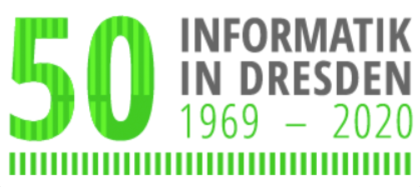

Festprogramm zum Deutschlandtag am 12. Juni 2020
-
09:00 Uhr
Lokale Begrüßung
Dr. Andreas Handschuh – Kanzler der TU Dresden
Barkhausen-Bau, Heinz-Schönfeld-Hörsaal
-
09:10 Uhr
Offizielle Eröffnung des Festtags
Michael Kretschmer – Ministerpräsident des Freistaates Sachsen und Schirmherr der Jubiläumsveranstaltung
Barkhausen-Bau, Heinz-Schönfeld-Hörsaal
-
09:30 Uhr
Zusammenbau des Deutschlandcampus der Informatik 2069
Vision einer kollaborativen und verteilten Roboterarbeit
Barkhausen-Bau, Heinz-Schönfeld-Hörsaal
-
09:50 Uhr
Grußwort der Gesellschaft für Informatik GI e.V.
Prof. Hannes Federrath – Präsident
Barkhausen-Bau, Heinz-Schönfeld-Hörsaal